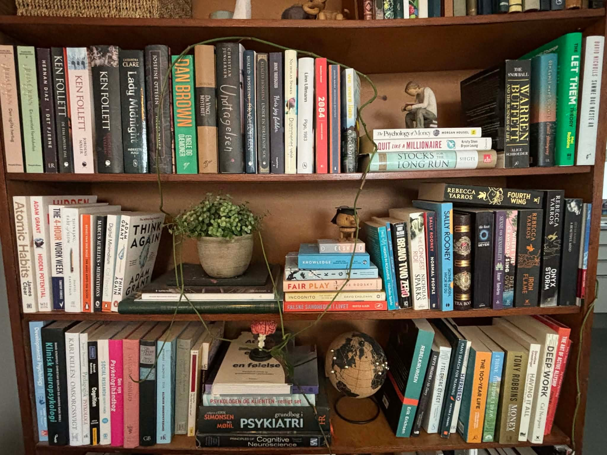

Om mig
Autoriseret Psykolog, cand.psych.aut.
Mit navn er Sofia Santana Christensen, og jeg er uddannet psykolog fra Københavns Universitet.
Jeg blev oprindeligt uddannet psykolog, fordi jeg altid har været optaget af det menneskelige sind, vores relationer og den måde, vi skaber mening og identitet i livet. For mig er psykologien ikke adskilt fra livet omkring os – den er fundamentet for, hvordan vi tænker, føler, handler og indgår i relationer med andre mennesker.
I terapien møder jeg dig med nysgerrighed, nærvær og ærlighed. Jeg interesserer mig for de mønstre, vi gentager, hvad de koster os, og hvordan vi kan begynde at udfordre dem på en måde, der skaber reel forandring.
Jeg tror på, at mening og menneskelig forbindelse er afgørende for trivsel. Derfor er mit fokus ikke kun at mindske det svære, men også at hjælpe dig med at skabe et liv, der føles mere ægte og meningsfuldt.
Evidensbaserede terapiformer:
- Metakognitiv terapi (MKT): Ændrer måden, du forholder dig til dine tanker på.
- Acceptance and Commitment Therapy (ACT): Hjælper med at håndtere svære følelser og leve efter dine værdier.
- Kognitiv adfærdsterapi (KAT): Identificerer og ændrer uhensigtsmæssige tanke- og handlemønstre.
- Løsningsfokuseret terapi (LFT): Identificerer vilkår og handlemuligheder, samt tager udgangspunkt i dine styrker, ressourcer og det, der allerede virker.
- Psykoedukation: Praktiske redskaber, du kan bruge i hverdagen.
Tidligere erfaring:
Jeg har terapeutisk erfaring indenfor en bred vifte af problemstillinger: bl.a. stress, angst, depression, relationelle udfordringer, sorg og mistrivsel.
- Terapeut hos Prescriba (2025–2026)
- Terapeut hos Psykologskolen (2024–2026)
Derudover har jeg arbejdet med rekruttering, ledelsessparring, talentudvikling og organisatorisk sundhed.
- Talent Acquisition i Copenhagen Offshore Partners (2023–2025)
- Recruiter hos Momentum Consulting (2021–2022)
Jeg har 10 års erfaring i arbejdet med børn og unge.
- PPR psykologisk arbejde med fokus på børn med svær skolevægring (2025)
- Underviser på Næstved Ungdomsskole (2017–2026)
Som supplement til min uddannelse har jeg et kursus i svær skolevægring gennem Københavns Universitet samt i Psychology and Social Connection ved University of Oxford.
Jeg er drevet af at være i kontinuerlig udvikling, og prioriterer derfor udover mit terapeutiske arbejde supplerende faglige og praktiske efteruddannelser.
Alt, hvad du deler med mig, behandles med fuld fortrolighed og under streng tavshedspligt.
